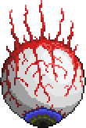
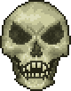
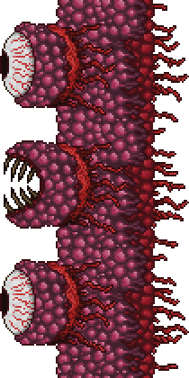
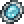
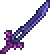

Eye of Cthulhu
Ofta den första riktiga bossen och är en perfekt startutmaning.


Terraria är ett populärt sandbox-äventyrsspel utvecklat av Re-Logic. Spelet släpptes första gången
2011 och utspelar sig i en stor, slumpmässigt genererad 2D-värld fylld med olika biomer, fiender och
hemligheter.
I Terraria får spelaren utforska världen, samla resurser, bygga byggnader och skapa nya
föremål genom crafting. Under spelets gång kan man hitta bättre utrustning, möta olika
NPC-karaktärer och bekämpa många unika bossar. Bossarna blir gradvis svårare och kräver
att spelaren förbereder sig genom att skaffa bättre vapen, rustningar och tillbehör.
spelet är känt för sin stora frihet. Spelaren kan själv välja om man vill fokusera på
byggande, utforskning eller strider. Världen innehåller många olika miljöer, som djungler,
öknar, snöområden och farliga grottsystem under marken.
Terraria kan spelas både ensam och tillsammans med andra i multiplayer, vilket gör att
spelare kan samarbeta för att bygga stora baser och besegra svåra bossar.
Tack vare kontinuerliga uppdateringar har spelet fått mycket nytt innehåll genom åren
och har blivit ett av de mest älskade indie-spelen.
Ofta den första riktiga bossen och är en perfekt startutmaning.

Skyddar spelets dungeon och kräven ganska bra utrustning.

Låser upp hardmode och förändrar hela världen med nya monster, biomes och material


Teleporterar spelaren tillbaka till spawn

Ett starkt svärd som går att få innan hardmode

Det starkaste svärdet i hela spelet och går bara att få när man klarat den sista bossen